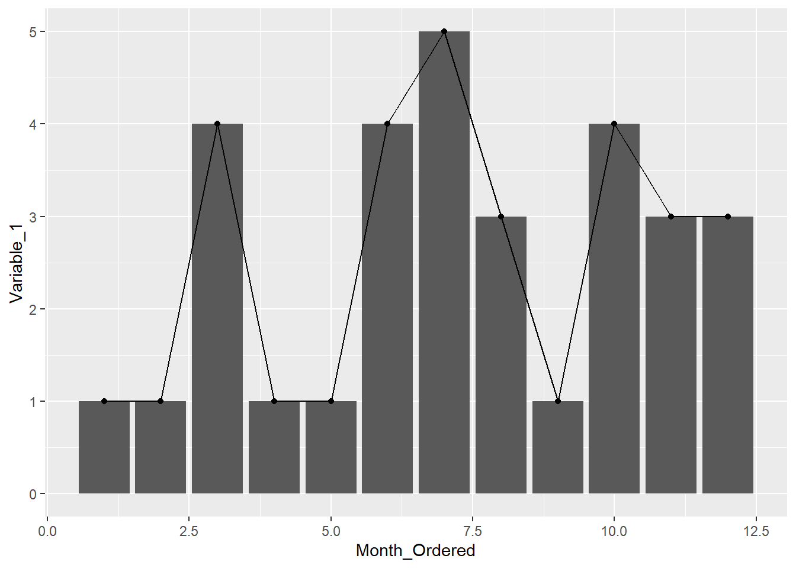

library(DT)
library(readr)
library(plotly)
library(htmltools)
library(tidyverse)Last compiled: 2020-10-02 Example text.
Example text.
dataset <- readr::read_csv("data/data.csv")DT::datatable(dataset,
rownames = FALSE,
filter="top",
options = list(pageLength = 5, scrollX=T) )plot1 <- dataset %>%
dplyr::filter(Group==1) %>%
ggplot2::ggplot(., aes(x = Month_Ordered, y = Variable_1)) +
geom_bar(stat="identity") +
geom_line() +
geom_point()
plot1
plotly::ggplotly(plot1)dataset$Group<-as.factor(dataset$Group)
plot2<-dataset %>%
ggplot(aes(x=Month_Ordered, y=Variable_2, group=Group, color=Group)) +
geom_line() +
geom_point()
plot2plotly::ggplotly(plot2)